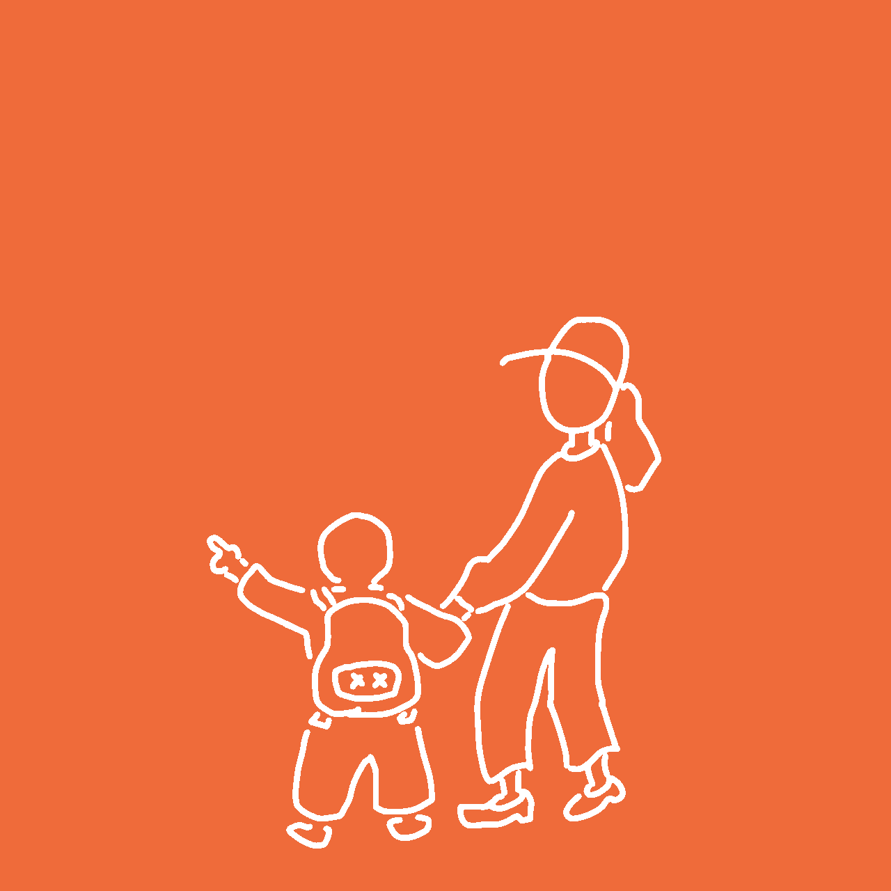
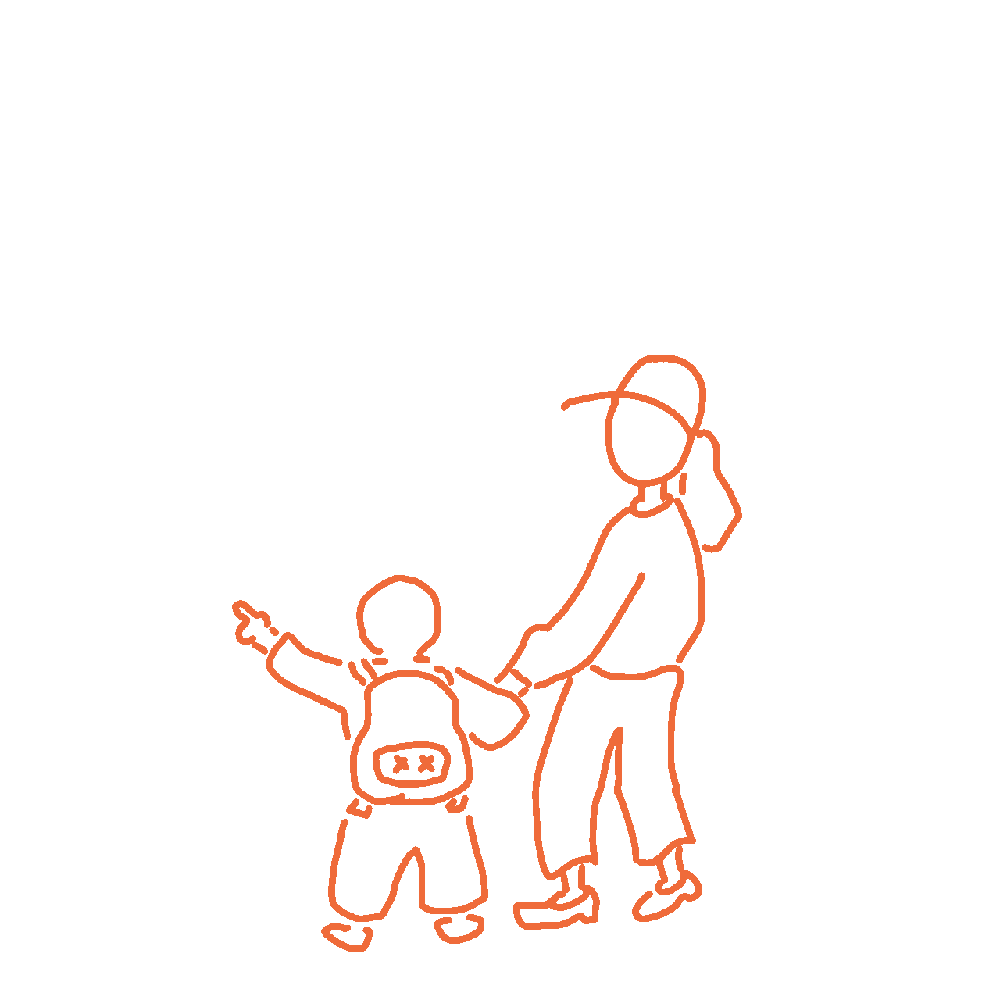
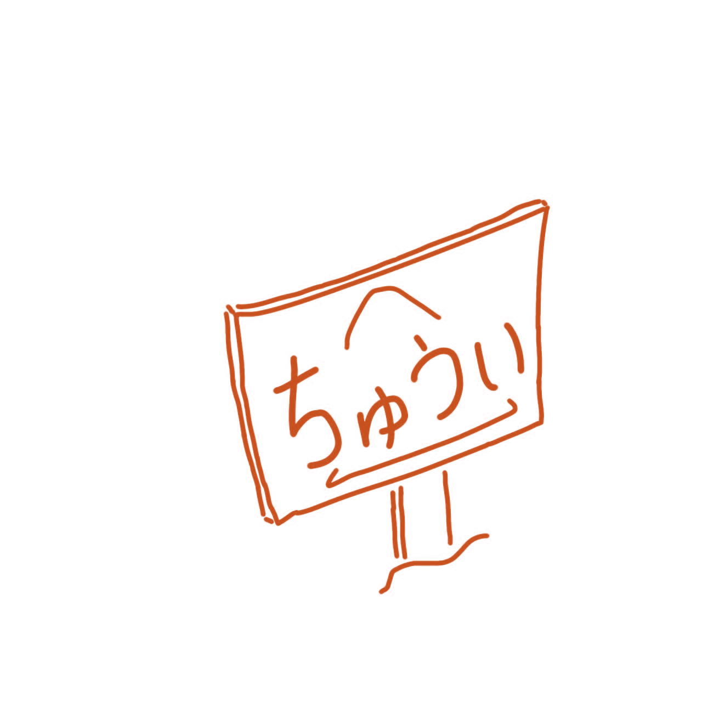

最初の約1か月は無料でご利用いただけます。
詳細や先行利用の受付状況は公式LINEからご確認ください。
こんなお悩みに
こんな場面で使われています
生まれる時間とゆとり
すべてが公式LINEから
アプリのインストール不要。
利用登録、予約、位置情報共有などを
公式LINEから行えます。
できること
託送者の確認
公式LINEよりお子さまの情報や保育園などを登録します。MITSU担当者が内容を確認し、送迎を担当する託送者をご案内します。担当が決まると、免許証（顔写真・経歴など）を事前にご確認いただけます。
初回の送迎練習
初回の利用時には、保護者様・お子さま・託送者の3人で一緒に送迎練習を行います。
送迎練習は顔合わせに併せて、交通上の注意点、施設での引渡し方法、サービスの実際の流れなどを確認・説明させていただきます。
実際に送迎開始！
実際に託送者にお子さまの送迎をお願いすることができます。
定期送迎の自動予約（同じ曜日・ルートの繰り返し予約）・位置情報共有・受取確認・評価などの機能が使用可能となります。
託送者について
MITSU管理者が託送者の本人確認・面談・安全に関する研修などを行い、基準を満たした方に託送者免許証を交付します。
実際の送迎は、免許証を取得した託送者が担当します。
MITSU管理者が基準を満たした方に託送者免許証を交付します。
送迎は、免許証を取得した託送者が担当します。
保護者は公式LINEから、担当託送者について次の4項目を送迎前に確認できます。
※ 託送者免許証は一般公開せず、その託送者と関係する登録保護者だけが確認できます。
※ 託送者免許証は、MITSU独自の確認・研修基準を満たしたことを示す認定証であり、公的資格ではありません。


安全性について、
もっと詳しく知りたい方へ
ご不明な点は公式LINEからお気軽にご相談ください。
利用できる地域や送迎内容、先行利用の受付状況について、
公式LINEからご相談いただけます。
料金・先行利用
送迎時間の定義
送迎時間は、託送者が保育園などのお迎え先に到着した時点から開始します。
お子さまの帰る準備や施設との引き渡し確認にかかる時間も送迎時間に含まれます。
送迎時間は
託送者がお迎え先に到着した時点
から開始します。
お子さまの帰る準備や施設との引き渡し確認にかかる時間も送迎時間に含まれます。
引き渡し後、
託送者が公式LINEで送迎終了を送信した時点で終了となります。で終了となります。
保護者による受け取り確認は安全確認のための機能であり、料金計算の終了時刻には影響しません。
FAQ
徒歩での送迎
先行提供中保育園・学童・習い事などへ、担い手が徒歩でお子さまを送り迎えします。
自転車・ベロタクシー
将来構想移動できる距離を広げるための手段として検討しています。
自家用車による送迎
将来構想法の枠内で実施できる形を、関係機関と対話しながら検討しています。
対応エリアの拡大
将来構想現在のエリアでの検証を終えたのち、順次広げることを目指しています。
利用できる地域や送迎内容、先行利用の受付状況について、公式LINEからご相談いただけます。
対象地域外の方からの事前登録も受け付けています。
公式LINEは受け付けています。
管理者による個別対応はです。